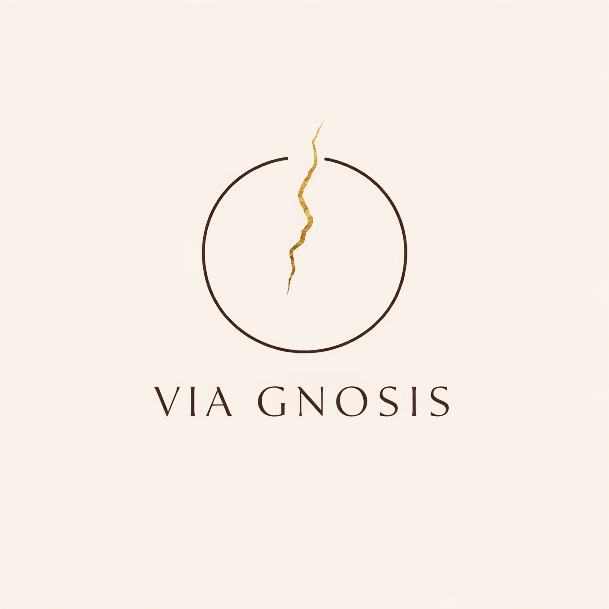

France 3 Bourgogne-Franche-Comté
Reportage « Dans l'œil de l'IA » — l'art à l'ère de l'intelligence artificielle.
Reportage
Via GnosisVia Gnosis — Rencontres
Agenda, presse et partenaires — les moments où le travail rencontre son public.
Le travail prend son sens quand il rencontre quelqu'un.
Expositions, salons, ateliers publics et interventions en institution — chaque rendez-vous est l'occasion de confronter la démarche à ceux qui la découvrent.
La presse locale et régionale a suivi plusieurs de ces étapes, dont un reportage de France 3 Bourgogne-Franche-Comté.
Reportage « Dans l'œil de l'IA » — l'art à l'ère de l'intelligence artificielle.
Reportage
Soixante-dix personnes, de 17 à 80 ans, réunies autour d'un débat interactif sur l'intelligence artificielle.
Presse
Portrait du duo et de sa démarche de création assistée par intelligence artificielle.
Presse
24ᵉ édition — samedi 29 et dimanche 30 août 2026, salons de l'Hôtel de Ville.
AgendaExposition, intervention, table ronde — parlons-en.